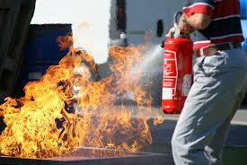

NOTRE SAVOIR FAIRE
La Sécurité Incendie; La Sécurité Electronique (Contrôle d’Accès, Vidéo Surveillance, Anti-intrusion,…); Les Equipements et matériels de protection individuelle; Les Equipements blindés (Porte blindée, Coffre fort); Les SAS et Porte coupe-feu; La Ventilation et le Désenfumage; La ferronnerie et les équipements blindés Etc.

UNE ECOLE DE FORMATION
Pour permettre aux équipements de sécurités installées d’atteindre les objectifs fixés, une exploitation efficiente de ceux-ci s’impose. Dès lors, la formation des exploitants des systèmes ainsi mis en œuvre se présente comme une nécessité absolue.

UN SERVICE APRES VENTE
Notre responsabilité ne s’arrête pas après la vente et/ou l’installation des équipements. Nous vous accompagnons dans le suivi régulier de ces équipements par des contrats de maintenance.

Extincteur